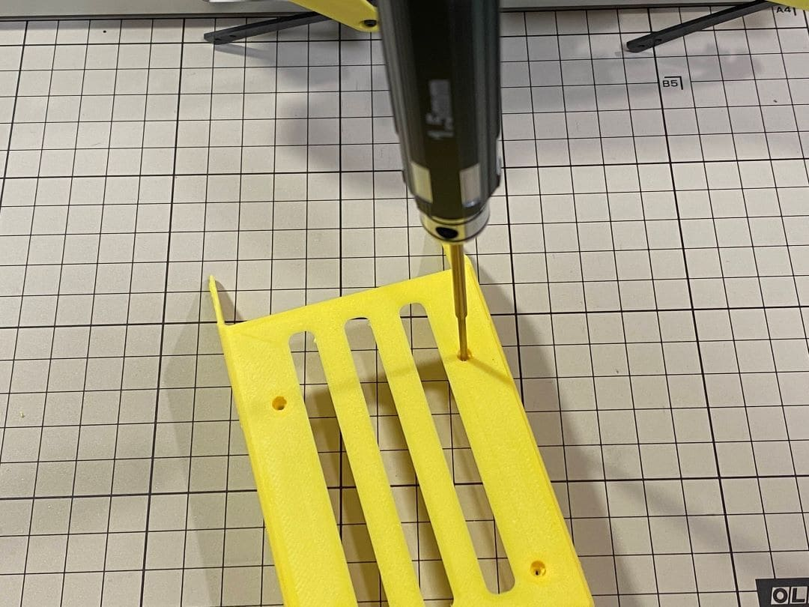
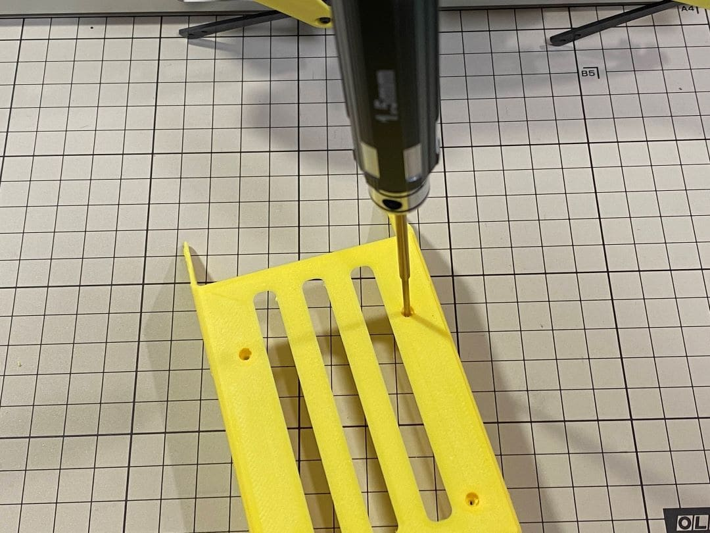

Assembly
Assemble Mini Pupper
This is the video clip for the pre-assembled leg kit, please refer to the below sections for more detailed steps.
Please also refer to Mini Pupper Fusion 360 CAD model: https://a360.co/3wFLSlT
0. Update change points after April 15 2022
Updated the body and hip parts from 3D printed to mold.
Re-designed and unified the original four hip parts into one for mold, for the detailed info, please refer to the mechanical design section.
If you get your Mini Pupper kit after April 15 2022, it will be easier to assemble.
If you have 3D printer and still hope to use the previous 3D printed design, that’s OK.
1. Write the pre-built image into microSD
Tools
In addition to the tools included in the kit, the following items are required for assembly.
USB keyboard
USB mouse
PC
microSD card reader
HDMI Display
micro HDMI cable
USB charger
Step 1.1 Charging the battery
The battery is charged via USB, see picture for USB socket, and can also be charged while attached to the Mini Pupper body.
※ LED light: Green means there is enough power, and Red means you need to charge it.
※ We recommend 5V/1A adapter, if you use 5V/2A adapter, the battery IC will change it to 1A. It needs about 1 hour to charge 80% and the light will become green, and an additional 1 hour to 100%, anyway, you can use it when the light becomes green.

Step 1.2 Download the image
You can download latest image file via the below folder.
The below picture is the custom carry board.
※ “xxx_MiniPupper_Controller_Ubuntu_22.04.img” means the image is for Ubuntu 22.04 version.
※ “xxx.MiniPupper_ROS&OpenCV_Ubuntu20.04.03.img” is the image file for the Ubuntu + ROS + OpenCV version for SLAM & Navigation & AI.
Step 1.3 Write the image into microSD card
Insert the microSD card into your PC’s SD card reader and write the image. We recommend the image creation tool balenaEtcher or Win32DiskImager as it is easy and reliable. It takes a while to complete.
Remove the SD card from the PC and insert it into the Raspberry pi.
2. Position of the screws
The pictures show the position of the screws briefly.


(The up pictures are before April 15 2022 version, the below pictures are after April 15 2022 version)
(The up pictures are before April 15 2022 version, the below pictures are after April 15 2022 version)


3. Legs Assembly
Please refer to the below video clip.
Tools
In addition to the tools included in the kit, the following items are required for assembly.
Loctite
※ We don’t recommand new users to use the Loctite at first, you can use it after you have much background.
※ Loctite prevents the nut from loosening, but it is not essential, as it can be tightened only when looseness is noticed.
Bolt to use
M2x5mm 2x4=8 ①+②, ⑤+⑥
M2x8mm 3x4=12 ②+③, ④+⑦, ③+④
M2x12mm 1x4=4 ⑤+⑦
M2x14mm 1x4=4 ③+⑤
Step 3.1 Single leg
Assemble the four legs. The front and back of the right side are the same, and so are the front and back of the left side. Show you how to assemble the right side.
Video Instructions, please refer to the link https://youtu.be/Ut7UnS3CTZs
The parts are numbered as follows to explain.
Assemble ① and ②
Use one M2x5mm screw.The screw is inserted from the bottom of ② upwards and tightened by inserting them into the screw holes in ①. Be careful about the sides of ②.
The two ballbearings in ② should be inserted all the way in and the end should be slightly visible as shown in the picture below. Tap the ball bearing and press it in without gaps.


Assemble ② and ③
Use an M2x8mm screw and an M2 locknut. Insert the screw from the bottom to the top of ③, pass through ② and tighten with the nut. It is important to pay attention to the orientation of ③. Look carefully at the position of the hole in the middle.


Adjustment of the length of ④
The length of ④ must match the length of ⑤. When adjusting the length, it is easier to use two long screws to make sure that the lengths match. Once the lengths have been adjusted, take apart all.


If it’s hard to twist, you can use two screwdrivers to assist.
Assemble ⑤ and ⑥
Use one M2x5mm screw. Insert the screws into ⑤ first, insert them into the holes of ⑥, and tighten them. The large hole in ⑥ should be facing the surface.


Assemble ⑤ and ⑦
Use an M2x12mm screw, an M2 locknut and two sets of ball bearings. Each ball bearing is made up of three parts, the top and bottom parts with the grooved side facing inwards. Insert a screw into a set of ball bearing. Then insert the screw into the hole ⑦. Taking care to look at the warped side of ⑦ to make sure it is facing the right way. Now screw in the another set of ball bearing. Finally, insert screw into ⑤ and tighten it with the nut.


Assemble ④ and ⑦
Use an M2x8mm screw and an M2 nut. Insert the screw into ⑦ and put ④ through, then tighten it with the nut. The direction of the front and back of ④ can be either.
Left and right leg


Assemble ③ and ④
Use an M2x8mm screw and an M2 nut. Insert the screw into ③ and put ④ through, then tighten it with the nut.
Left and right leg


Assemble ③ and ⑤
Use M2x14mm screws and two sets of ball bearings. Thread the screws through the bearings, ③, bearings, ⑤, in that order. The screws are not fixed, but you will tighten them when you mount the servo in the next step.


Completion of a right leg
Now we have one leg on the right side. Here are some pictures so you can see it from different angles. The left leg should be symmetrical with the right one.


opposite side


Step 3.2 Four legs

Step 3.3 Locktite
As the nut is on a moving joint, it will loosen quickly if tightened too tightly. They should be secured with Loctite. It is possible to dismantle the nut later, as it can be loosened by a strong force.
Some screws are also secured with glue as the below picture shows.

4. Hips Assembly
Step 4.1 Hip
Please refer to the below video clip.
There are two kinds of servo cables, No.1,4,7,10 cables length is 9cm, other cables length is 15cm.
For the position of each servos, please refer to the below picture.

Here shows how to assemble the rear right hip.
Confirm whether the servo shaft is at the right position. The middle position marker is added on the output shaft, the output shaft is at its middle position by fault as the left picture shows. The shaft position may be changed during assembly as the middle picture shows, if you find it, you can use the servo horn to move the output shaft to the right position, and then finally make the servo horn at the place as the right picture shows.
Connect the servo and hip part.

Put two servos into hip parts
Insert two servos into the box and fix them with M2x6mm screws.

Four hip parts, please refer to the servo positions.
Assemble leg and hip
※ If you have no technology background, it’s easier to attach the leg to the hip during the calibration step.
※ If you are the first time to assemble quadruped robot, we don’t recommand you use the Loctite.
Attach the leg to the hip using the M2x12mm screws. Leg is tilted at approximately 45°, as shown in the manual.
Tighten the screws with Loctite. Use a toothpick to apply Loctite to the servo’s screw holes.
Step 4.2 Four Hips
※ Please pay attention to the positions of the servo gear output shaft


5. Body Frame Assembly
Step 5.1 Center parts
The position of each servos are shown as below.
※ There are two kinds of servo cables, No.1,4,7,10 cables length is 9cm, other cables length is 15cm.
It is useful to put masking tape on the cables and write the number of servos during this process to make it easier later.

Step 5.2 Front parts
*The front part is designed to hold the LCD screen. Make sure you don’t mistake it for the rear part.

Step 5.3 Rear side
The same procedure as for the front part.


Step 5.4 Battery
If you DIY the battery, please ensure our battery spec at first, especially the Voltage should be less than 7.4V, you can also refer to other backers work https://www.facebook.com/groups/716473723088464/posts/777616293640873/
Install the battery pack.
Be careful of the carbon fiber front and rear orientation.

Slide the battery backwards and secure it. Pass the cable through the hole in the bottom plate and bring it up to the top.

Step 5.5 Bottom plate
The orientation of the plate must be such that the hole is at the front.

If the leg is stuck, turn the part ①

Step 5.6 Display and Frame of face
Remove the protective sheet for the display. Fold the thin flexible cable at the edge of the display. Attach the board and the display to the main unit. When attaching the display, you can use a stick to gently push the flexible cable, so that it goes as far back as possible.


Be careful with the yellow parts as it has a front and back.

Step 5.7 Custom circuit board
Plug the display cable into the custom circuit board.
Insert the 12 servo cables. In the picture, you can see: J1,J2,J3…. . J12.
Use four M2x5mm screws and four short supports.
put on the carbon fiber board

plug in the battery cable. This connector may interfere with the hips parts, so you have to slide it through a hole in the middle of the board.

Use eight M2x5mm screws. The orientation of the plate must be such that the large opening is at the front.
Pull the custom circuit board closer to the body. The board may float, but you can use four long posts to hold it in place.


※ Need to pay attention to the cable of the No. 1 servo to prevent it from being overwhelmed.

Step 5.8 Fan
To install the fan.

Step 5.9 Raspberry Pi 4
6. Cover Assembly
Please refer to the below video clip.
Step 6.1 Side panels

Step 6.2 Shin guards
Use four M2x10mm countersunk screws.

Step 6.3 Shoulders
Insert only the screws first and then insert the shoulder parts into the gap. Insert the 2 mm hex driver into the hole in the shoulder part and tighten the screws.
Step 6.4 Top cover
Use four M2x10mm screws, if the holes are too small to fit the screws, as the part is made with a 3D printer, you can enlarge the holes by turning them with the supplied 2mm hexagonal screwdriver.
 

Step 6.5 Shoes
Put on 4 shoes.


Step 6.6 Completion!


7.Add-On Assembly
Step 7.1 Lidar
If you order the Lidar, the Lidar holder will be shipped together.


Step 7.2 Camera
If you order the camera, the camera holder is not included in the kit. But you can 3d-print it from the stl file down below.
https://drive.google.com/drive/folders/1lRADDbAt7mSBJE4j8HCji1WbWcpneUED
Step 7.3 Completion!


Assemble Mini Pupper 2
This is the video clip for the complete kit, please refer to the below sections for detailed steps.
Please also refer to Mini Pupper 2 Fusion 360 CAD model: https://a360.co/485n8mP
1. Write the pre-built image into microSD
Tools
In addition to the tools included in the kit, the following items are required for assembly.
USB keyboard
USB mouse
PC
microSD card reader
HDMI Display
micro HDMI cable
USB charger
Step 1.1 Charging the battery
The battery is charged via USB, see picture for USB socket, and can also be charged while attached to the Mini Pupper body.
※ LED light: Green means there is enough power, and Red means you need to charge it.
※ We recommend 5V/1A adapter, if you use 5V/2A adapter, the battery IC will change it to 1A. It needs about 1 hour to charge 80% and the light will become green, and an additional 1 hour to 100%, anyway, you can use it when the light becomes green.
Step 1.2 Download the image
You can download the pre-built image files from Mini Pupper pre-built images
※ “xxx_stanford**.img” means the image is for Ubuntu 22.04 version.
The picture below is the custom carry board.
Step 1.3 Write the image into a microSD card
Insert the microSD card into your PC’s SD card reader and write the image. We recommend the image creation tool balenaEtcher or Win32DiskImager as it is easy and reliable. It may take a while to complete.
2. Position of the screws
The pictures show the position of the screws briefly.

3. Legs Assembly
Please refer to the below video clip.
Bolt to use
M2x5mm 2x4=8 ①+②, ⑤+⑥
M2x8mm 3x4=12 ②+③, ④+⑦, ③+④
M2x12mm 1x4=4 ⑤+⑦
M2x14mm 1x4=4 ③+⑤
Step 3.1 Single leg
Assemble the four legs. The front and back of the right side are the same, and so are the front and back of the left side. Show you how to assemble the right side.
Video Instructions, please refer to the link https://youtu.be/Ut7UnS3CTZs
The parts are numbered as follows to explain.
Assemble ① and ②

The two sides of bearings inside ② are different.
Assemble ② and ③
Use an M2x8mm screw and an M2 locknut. Insert the screw from the bottom to the top of ③, pass through ② and tighten with the nut. It is important to pay attention to the orientation of ③. Look carefully at the position of the hole in the middle.


Adjustment of the length of ④
The length of ④ must match the length of ⑤. When adjusting the length, it is easier to use two long screws to make sure that the lengths match. Once the lengths have been adjusted, take apart all.
If it’s hard to twist, you can use two screwdrivers to assist.
Assemble ⑤ and ⑥
Use one M2x5mm screw. Insert the screws into ⑤ first, insert them into the holes of ⑥, and tighten them. The large hole in ⑥ should be facing the surface.
Assemble ⑤ and ⑦
Use an M2x12mm screw, an M2 locknut and two sets of ball bearings. Each ball bearing is made up of three parts, the top and bottom parts with the grooved side facing inwards. Insert a screw into a set of ball bearing. Then insert the screw into the hole ⑦. Taking care to look at the warped side of ⑦ to make sure it is facing the right way. Now screw in the another set of ball bearing. Finally, insert screw into ⑤ and tighten it with the nut.
Assemble ④ and ⑦
Use an M2x8mm screw and an M2 nut. Insert the screw into ⑦ and put ④ through, then tighten it with the nut. The direction of the front and back of ④ can be either.
Left and right leg
Assemble ③ and ④
Use an M2x8mm screw and an M2 nut. Insert the screw into ③ and put ④ through, then tighten it with the nut.
Left and right leg
Assemble ③ and ⑤
Use M2x14mm screws and two sets of ball bearings. Thread the screws through the bearings, ③, bearings, ⑤, in that order. The screws are not fixed, but you will tighten them when you mount the servo in the next step.

Completion of a right leg
Now we have one leg on the right side. Here are some pictures so you can see it from different angles. The left leg should be symmetrical with the right one.

opposite side

Step 3.2 Four legs
Step 3.3 Locktite
After Mini Pupper run sometime, some screws or nuts will loose, you have to check and tighten them if needed. It’s helpful to understand how it works.
※ We don’t recommend new users to use the Loctite at first, you can use it after you have much background.
※ Loctite prevents the nut from loosening, but it is not essential, as it can be tightened only when looseness is noticed.
Some screws are also secured with glue as the below picture shows.
4. Display and Frame of face
Remove the protective sheet for the display. Fold the thin flexible cable at the edge of the display. Attach the board and the display to the main unit.

When attaching the display, you can use a stick to gently push the flexible FPC cable, so that it goes as far back as possible. Don’t bend this FPC cable at 180 degrees.


5. Body Frame and Hips Assembly
Refer to the top video for how to set servo ID.
For the position of each servo, please refer to the below picture.
Step 5.1 Body center parts
Connect the No.1, 4, 7, 10 servos to the body center parts.
It is useful to put masking tape on the cables and write the number of servos during this process to make it easier later.

Pay attention to the center part direction.


Connect the center parts to the bottom carbon fiber
Be careful of the carbon fiber front and rear orientation.

Step 5.2 Hip parts
Assemble four hip parts, please refer to the servo positions.
Ensure the No.1, 4, 7, 10 servos at the right position.
Use the custom cable to connect the battery to the top PCB board, and click the battery button for more than 3 seconds to boot up it.
Connect the servos to the top PCB board, please pay attention to the servo connector directions.

Connect the four hip parts to the body, please pay attention.
Don’t power off the battery now.
Ensure all the servo positions are right.
Step 5.3 Front and back body parts
Power off the battery, and connect the front and back body parts.
Pay attention to the directions.
Power on the battery to check the hip parts all at their right positions, connect all the rest servos to the PCB board, and then power off the battery and go ahead.

Connect the LCD cable to the PCB board, make the servo cables clear.

Fix the top and bottom boards.


Step 5.4 Assemble four legs to the body

Pay attention to the theoretically best angles, it’s better to meet the theoretically best angles as much as possible. But don’t worry, we’ll use the software to calibrate the angles later.

Step 5.5 Assemble the battery to the body
Slide the battery backward and secure it.
Step 5.6 Assemble the speaker
6. Cover Assembly
Please refer to the below video clip.
Step 6.1 Side panels

Step 6.2 Shin guards
Use four M2x10mm countersunk screws.

Step 6.3 Shoulders
Insert only the screws first and then insert the shoulder parts into the gap. Insert the 2 mm hex driver into the hole in the shoulder part and tighten the screws.


Step 6.4 Shoes
Put on 4 shoes.

Complete!
7. Add-On Assembly
Step 7.1 Lidar
If you order the Lidar, the 3D-printed Lidar holder and custom cable will be shipped together. You can also print the holder by yourself using the Mini Pupper 2 STL files

Connect the 3 holders to the 3D-printed part.
Connect the custom cable to the Lidar connector on the PCB board.
Fix the 3D-printed part on the PCB board.

Connect the custom cable to the Lidar module and fix it using the self-tapping screws.

Step 7.2 Camera
Mini Pupper 2 also supports the single Pi camera or OpenCV OAK-D-Lite camera module. You can also print the holder by yourself using the Mini Pupper 2 STL files

Assemble Mini Pupper 2 Pro
※ General DIY process:
Assemble –> Calibration –> Run
※ Attention:
The MCU(ESP32 and AT32) software are both pre-installed, you don’t need to flash any MCU image.
You don’t need to set each servo number as Mini Pupper 2 because the servo number is fixed by the hardware design, please follow the guide to put the servo to the right positions.
Please refer to Mini Pupper 2 Fusion 360 CAD model for your reference: https://a360.co/485n8mP
1. Write the pre-built image into microSD
Tools
In addition to the tools included in the kit, the following items are required for assembly.
USB keyboard
USB mouse
PC
microSD card reader
HDMI Display
micro HDMI cable
USB charger
Step 1.1 Charging the battery
The battery is charged via USB, see picture for USB socket, and can also be charged while attached to the Mini Pupper body.
※ LED light: Green means there is enough power, and Red means you need to charge it.
※ We recommend 5V/1A adapter, if you use 5V/2A adapter, the battery IC will change it to 1A. It needs about 1 hour to charge 80% and the light will become green, and an additional 1 hour to 100%, anyway, you can use it when the light becomes green.
Step 1.2 Download the image
You can download the pre-built image files from Mini Pupper pre-built images
※ “v2Pro_stanford**.img” means the image is for Ubuntu 22.04 version.
The picture below is the custom carry board.
Step 1.3 Write the image into a microSD card
Insert the microSD card into your PC’s SD card reader and write the image. We recommend the image creation tool balenaEtcher or Win32DiskImager as it is easy and reliable. It may take a while to complete.
2. Position of the screws
The pictures show the position of the screws briefly.
3. Legs Assembly
Please refer to the below video clip.
Bolt to use
M2x5mm 2x4=8 ①+②, ⑤+⑥
M2x8mm 3x4=12 ②+③, ④+⑦, ③+④
M2x12mm 1x4=4 ⑤+⑦
M2x14mm 1x4=4 ③+⑤
Step 3.1 Single leg
Assemble the four legs. The front and back of the right side are the same, and so are the front and back of the left side. Show you how to assemble the right side.
Video Instructions, please refer to the link https://youtu.be/Ut7UnS3CTZs
The parts are numbered as follows to explain.
Assemble ① and ②
The two sides of bearings inside ② are different.
Assemble ② and ③
Use an M2x8mm screw and an M2 locknut. Insert the screw from the bottom to the top of ③, pass through ② and tighten with the nut. It is important to pay attention to the orientation of ③. Look carefully at the position of the hole in the middle.
Adjustment of the length of ④
The length of ④ must match the length of ⑤. When adjusting the length, it is easier to use two long screws to make sure that the lengths match. Once the lengths have been adjusted, take apart all.
If it’s hard to twist, you can use two screwdrivers to assist.
Assemble ⑤ and ⑥
Use one M2x5mm screw. Insert the screws into ⑤ first, insert them into the holes of ⑥, and tighten them. The large hole in ⑥ should be facing the surface.
Assemble ⑤ and ⑦
Use an M2x12mm screw, an M2 locknut and two sets of ball bearings. Each ball bearing is made up of three parts, the top and bottom parts with the grooved side facing inwards. Insert a screw into a set of ball bearing. Then insert the screw into the hole ⑦. Taking care to look at the warped side of ⑦ to make sure it is facing the right way. Now screw in the another set of ball bearing. Finally, insert screw into ⑤ and tighten it with the nut.
Assemble ④ and ⑦
Use an M2x8mm screw and an M2 nut. Insert the screw into ⑦ and put ④ through, then tighten it with the nut. The direction of the front and back of ④ can be either.
Left and right leg
Assemble ③ and ④
Use an M2x8mm screw and an M2 nut. Insert the screw into ③ and put ④ through, then tighten it with the nut.
Left and right leg
Assemble ③ and ⑤
Use M2x14mm screws and two sets of ball bearings. Thread the screws through the bearings, ③, bearings, ⑤, in that order. The screws are not fixed, but you will tighten them when you mount the servo in the next step.
Completion of a right leg
Now we have one leg on the right side. Here are some pictures so you can see it from different angles. The left leg should be symmetrical with the right one.
opposite side
Step 3.2 Four legs
Step 3.3 Locktite
After Mini Pupper run sometime, some screws or nuts will loose, you have to check and tighten them if needed. It’s helpful to understand how it works.
※ We don’t recommend new users to use the Loctite at first, you can use it after you have much background.
※ Loctite prevents the nut from loosening, but it is not essential, as it can be tightened only when looseness is noticed.
Some screws are also secured with glue as the below picture shows.
4. Display and Frame of face
Remove the protective sheet for the display. Fold the thin flexible cable at the edge of the display. Attach the board and the display to the main unit.

When attaching the display, you can use a stick to gently push the flexible FPC cable, so that it goes as far back as possible. Don’t bend this FPC cable at 180 degrees.
5. Body Frame and Hips Assembly
Before you connect the CM4 module to the carry board, please make sure to remove the protective film on the Thermal Pad.
Don’t need to set servo ID for v2 pro version, the servo ID is fixed by hardware design.
For the position of each servo, please refer to the below picture.

Step 5.1 Body center parts
Connect the No.1, 4, 7, 10 servos to the body center parts.
It is useful to put masking tape on the cables and write the number of servos during this process to make it easier later.
Pay attention to the center part direction.
Step 5.2 Hip parts
Assemble four hip parts, please refer to the servo positions.
Connect the No.1, 4, 7, 10 servos to the servo MCU PCB baord.
Connect the rest servos to the servo MCU PCB baord.

Pay attention to the servo cable connectors’ directions.

Use the DIY cable to connect the top PCB board to the servo MCU PCB baord.
Power on the battery and connect to the top PCB board.

Connect the four black hip parts to the relative servos(No. 1,4,7,10).
Connect the four hip parts to the body, please pay attention.
Don’t power off the battery now.
Ensure all the servo positions are right.
Step 5.3 Front and back body parts
Power off the battery, adjust the red cable position and connect the front and back body parts.

Use the screws to fix the top PCB board.

You can tighten the servo MCU PCB board with tape.

Power the battery and connect to the top PCB board to ensure the four black hip part positions are right.

Connect the center parts to the bottom carbon fiber.
Be careful of the carbon fiber front and rear orientation.
Step 5.4 Assemble four legs to the body
Prepare the four pre-assembled legs
Pay attention to the theoretically best angles, it’s better to meet the theoretically best angles as much as possible.
But don’t worry, we’ll use the software to calibrate the angles later.
Step 5.5 Assemble the battery to the body
Slide the battery backward and secure it.
Step 5.6 Assemble the speaker
6. Cover Assembly
Please refer to the below video clip.
Step 6.1 Side panels
Step 6.2 Shin guards
Use four M2x10mm countersunk screws.
Step 6.3 Shoulders
Insert only the screws first and then insert the shoulder parts into the gap. Insert the 2 mm hex driver into the hole in the shoulder part and tighten the screws.
Step 6.4 Shoes
Put on 4 shoes.
Complete!
7. Add-On Assembly
Step 7.1 Lidar
If you order the Lidar, the 3D-printed Lidar holder and custom cable will be shipped together. You can also print the holder by yourself using the Mini Pupper 2 STL files
Connect the 3 holders to the 3D-printed part.
Connect the custom cable to the Lidar connector on the PCB board.
Fix the 3D-printed part on the PCB board.
Connect the custom cable to the Lidar module and fix it using the self-tapping screws.
Step 7.2 Camera
Mini Pupper 2 also supports the single Pi camera or OpenCV OAK-D-Lite camera module. You can also print the holder by yourself using the Mini Pupper 2 STL files